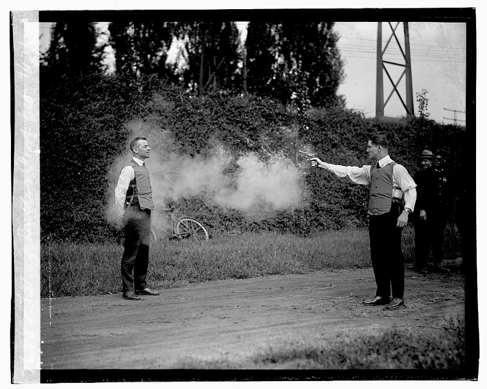
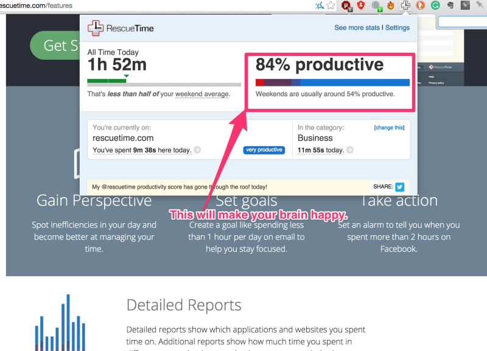
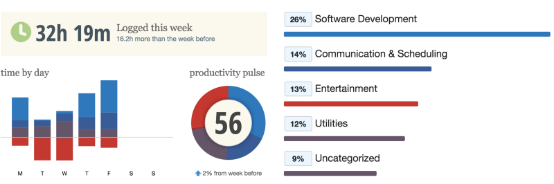
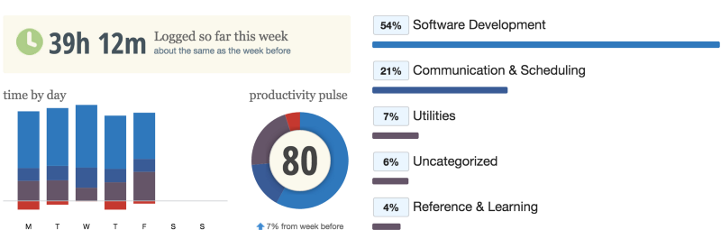

Over the last few months I've been trying different ways to increase my productivity, specifically during work hours. From todo lists to pomodoro's, xeffect cards, the autofocus method and even back to GTD. I've noticed a pattern with a lot of these techniques. They all require a pile of maintenance and none of them actually give you much in terms of positive feedback. When you mark a task off a list, you're often not getting the satisfaction of completion because that task is in the middle of a huge pile of other tasks you have yet to face. These lists goal to complete, all lists and systems have done is given me two problems to solve. The Pomodoro technique especially, the amount of over-head and tracking you need to do just to discover productivity trends is painful. How off were your estimates, how many interruptions did you log last Tuesday, it's all a bit messy and overwhelming after a while, and difficult to maintain.
A few years ago Jeff Atwood wrote a post titled Todon't, which provides a lot of good reasons why todo lists aren't making you any more productive and to some extent I agree with him. What I disagree on is his dismissal of tools. While todo lists might not motivate you much, there are apps out there to help assist us in focusing on the tasks at hand. So I'm not about to throw tools out the window yet.
What I was looking for were apps that required almost no maintenance but would improve your productivity in some way shape or form and after a fairly exhaustive search I've come across two that together have increased my personal/work-time productivity by leaps and bounds(evidence at the end, promise).
Focus(for Mac)
Focus is awesome. It has everything I could want in a tool to stop my lizard brain from hitting up distraction sites every ten minutes. It sounds a little like Self-Control in that it will block certain websites for certain time periods. However, it has a few other features three of which turn Focus into something far, far more powerful.
Firstly, it will also block apps, meaning there's no circumventing unfocused time by say watching a movie or playing video games. Secondly when you go to a blocked website it will present quotes to try and motivate you, not just a big "THIS IS BLOCKED" message. Now, I'm a big fan of Stoicism, so I dumped a ton of Stoic quotes in there, so everytime I try go to reddit, I can't. Now, however I also get Marcus Aurelius telling me I might die any day now so do the right thing(or other, better motivation quotes). Finally there's schedules. This is easily the most powerful feature of Focus. It allows you to set blocks of time during your days when you want to be focused, so it's no longer an action you need to take. This is key, focused can now be the default setting on your computer. Here's me, trying to unfocus while writing this post. I can't so I guess I should keep writing. That's fantastic.
It means when I get up in the morning and try to fire up reddit, Marcus is shouting at me again. First thing when I get into work, Marcus is shouting at me again. My default behaviour when I am on a laptop is to be productive, it changes how you see your computer. It's not the amazing distraction device it once was. It's a tool for getting stuff done.
Right now I have focus to run from 6am-8pm on workdays(so even after work I don't just veg out with distracting stuff on my laptop) and it's 9am-6pm on weekends(for movies etc in the evenings). I'm half tempted to try run it 24/7 for a few weeks and see if I miss the noise. Either way this app has given me many more productive hours of my life back.
Rescuetime
Rescuetime has been around a while and at first I was pretty dismissive of it, I mean it has a 'Get Focused' mode that sort of like a poor man's Focus and it has some pretty graphs but why in God's name would I want to maintain this sort of data on everything I do for some graphs? Well, the simple answer is because if you have a brain that's anything like mine, then it's stupid and those graphs will do more for your productivity than a million unread copies of Getting Stuff Done. Rescuetime provides an easy, visual way to compare your productivity over time, and that little productivity score might just begin to matter to you. I've installed the chrome extension, which provides a really handy pop-up of how you're going today and how this compares to your average. If you begin to check this regularly, you'll really begin to care about keeping above your average(then of course your average will increase).

It's like the stuff FarmVille does to your brain, but instead of watering computer plants, you're getting shit done.
Evidence
To quantify how effective this has been, here's my Rescuetime score for the times between 6am-8pm on the first week of January.

And again this week(2nd week of February).

I can't really argue with those results. post and want to give it a try, it'd be great if you could use them. Thanks!